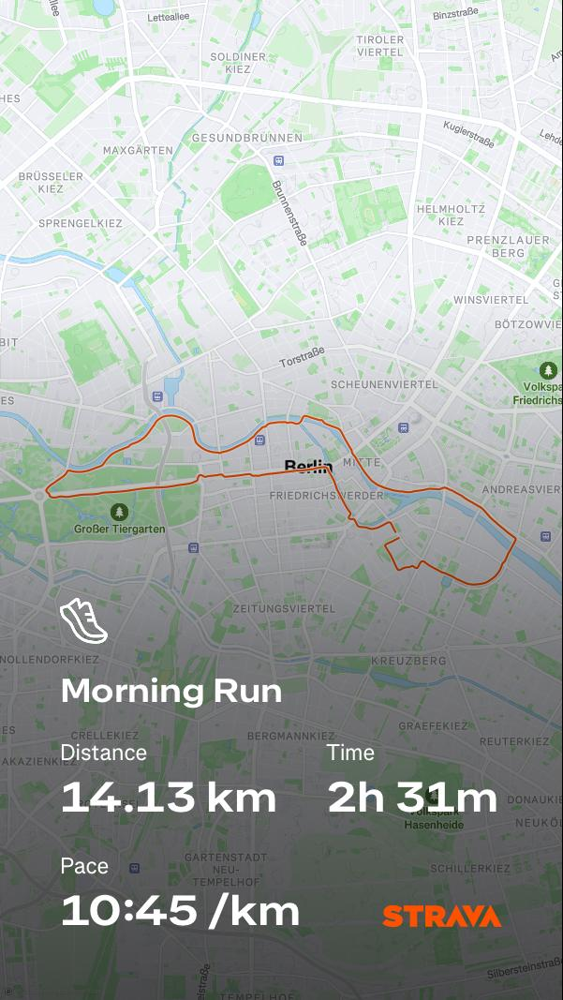

2025/09/24
I couldn't stick to my running plan. I didn't consistently do my 3 runs per week. The clock is ticking and the half-marathon is just a month away. I need to build my endurance. There's no other way around it. So I decided to do a long run today. I planned to run 14K at an easy pace. My goal was to finish without walking. I started very slow. Kept my heart rate in zone 1 and 2. Even I was surprised because usually, even if I do easy runs, my heart rate goes up to zone 3. I guess those runs weren't slow enough. This time I was literally plodding.  It took me 2 and a half hours to finish the run. So this was officially my longest run ever. Both in distance and time. I'm quite happy I achieved my goal of not walking.
But as the day progressed, my legs got sorer and sorer. My knee started hurting and I had to walk as if I had a wooden leg. took me 2-3 days to recover.